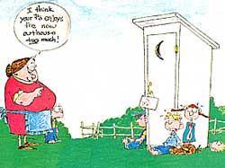

Gentlemen, you are face-to-face with the champion privy builder of Sangoman Country.
Chil Sale
I drives out to Elmer's place, gettin' there about dinner time. I knocks a couple of times on the door and I see they got a lot of folks to dinner, so not wishin' to disturb 'em, I just sneaks around to the side door and yells, "Hey, Elmer, here I am; where do you want that privy put?"
Elmer comes out and we get to talkin' about a good location. He was all fer puttin' her right alongside a jagged path runnin' by a big Northern Spy.
"I wouldn't do it, Elmer," I sez, "and I'll tell you why. In the first place, her bein' near a tree is bad. There ain't no sound in nature so disconcertin' as the sound of apples droppin' on th' roof. Then another thing, there's a crooked path runnin' by that tree, and the soil there ain't adapted to absorbin' moisture. Durin' the rainy season she's likely to be slippery. Take your grandpappy-goin' out there is about the only recreation he gets. He'll go out some rainy night with his nighties flappin' around his legs, and like as not when you come out in the mornin' you'll find him prone in the mud, or maybe skidded off one of them curves and wound up in the corn crib. No, sir," I sez, "put her in a straight line with the house and, if it's all the same to you, have her go past the woodpile. I'll tell you why.
"Take a woman, fer instance-out she goes. On the way back she'll gather five sticks of wood, and the average woman will make four or five trips a day. There's twenty sticks in the woodbox without any trouble. On the other hand, take a timid woman, if she sees any men folks around, she's too bashful to go direct out, so she'll go to the woodpile, pick up the wood, go back to the house, and watch her chance. The average timid woman-especially a new hired girl-I've knowed to make as many as ten trips to the woodpile before she goes in, regardless. On a good day you'll have your woodbox filled by noon, and right there is a savin' of time.
"Now, about the diggin' of her. You can't be too careful about that," I sez. "Dig her deep and dig her wide. It's a mighty sight better to have a little privy over a big hole than a big privy over a little hole. Another thing; when you dig her deep you've got her dug; and you ain't got that disconcertin' thought stealin' over you that sooner or later you'll have to dig again.
"And about her roof," I sez. "I can give you a lean-to type or a pitch roof.
Pitch roofs cost a little more, but some of our best people has lean-tos. If it was fer myself, I'd have a lean-to, and I'll tell you why.
"A lean-to has two less corners fer the wasps to build their nests in; and on a hot August afternoon there ain't nothin' so disconcertin' as a lot of wasps buzzin' 'round while you're settin' there doin' a little readin', figgerin', or thinkin'. Another thing," I sez, "a lean-to gives you a high door. Take that son of yours, shootin' up like a weed; don't any of him seem to be turnin' under. If he was tryin' to get under a pitch roof door he'd crack his head everytime. Take a lean-to, Elmer; they ain't stylish, but they're practical.
"As to the latch fer her, I can give you a spool and string, or a hook and eye. The cost of a spool and string is practically nothin', but they ain't positive in action. If somebody comes out and starts rattlin' the door, either the spool or the string is apt to give way, and there you are. But with a hook and eye she's yours, you might say, for the whole afternoon, if you're so minded. Put on the hook and eye of the best quality 'cause there ain't nothin' that'll rack a man's nerves more than to be sittin' there ponderin', without a good, strong, substantial latch on the door." And he agreed with me.
I never use knotty timber. All clean white pine-and I'll tell you why: You take a knothole; if it doesn't fall out, it will get pushed out; and if it comes in the door, nine times out of ten it will be too high to sit there and look out, and just the right height for some snooper to sneak around, peak in-and there you are-cached.
"Now," I sez, "how do you want that door to swing? Openin' in or out?" He said he didn't know. So I sez it should open in. This is the way it works out: "Place yourself in there. The door openin' in, say about fortyfive degree. This gives you air and lets the sun beat in. Now, if you hear anybody comin', you can give it a quick shove with your foot and there you are. But if she swings out, where are you? You can't run the risk of havin' her open for air or sun, because if anyone comes, you can't get up off that seat, reach way around, and grab 'er without gettin' caught, now can you?" He could see I was right.
So I built his door like all my doors, swingin' in, and, of course, facing east, to get the full benefit of th' sun. And I tell you, gentlemen, there ain't nothin' more restful than to get out there in the mornin', comfortably seated, with th' door about three-fourths open. The old sun, beatin' in on you, sort of relaxes a body-makes you feel m-i-g-h-t-y, m-i-g-h-t-y r-e-s-t-f-u-l.
"Now," I sez, "about the paintin' of her. What color do you want 'er, Elmer?" He said red. "Elmer," I sez, "I can paint her red, and red makes a beautiful job; or I can paint her a bright green, or any one of a half-dozen other colors, and they're all mighty pretty; but it ain't practical to use a single solid color, and I'll tell you why. She's too durn hard to see at night. You need contrast-just like they use on them railroad crossin' bars-so you can see 'em in the dark.
"If I was you, I'd paint her a bright red, with white trimmin's-just like your barn. Then she'll match up nice in the daytime, and you can spot 'er easy at night, when you ain't got much time to go scoutin' around.
"There's a lot of fine points to puttin' up a first-class privy that the average man don't think about. It's no job for an amachoor, take my word on it. There's a whole lot more to it than you can see by just takin' a few squints at your nabor's. Why, one of the worst tragedies around heer in years was because old man Clark's boys thought they knowed somethin' about this kind of work, and they didn't.
"You see, I put a 4 X 4 that runs from the top right straight on down five foot into the ground. That's why you never see any of my jobs upset Halloween night. They might pull 'em out, but they'll never upset 'em.
"Here's what happened: They didn' anchor theirs, and they painted it solid red-two bad mistakes.
"Halloween night came along, darker than pitch. Old man Clark was out in there. Some of them devilish nabor boys was out for no good, and they upset 'er with the old man in it.
"Of course, the old man got to callin' and his boys heard the noise. One of 'em sez: `What's the racket? Somebody must be at the chickens.' So they took the lantern, started out to the chicken shed. They didn't find anything wrong there, and they started back to the house. Then they heerd the dog bark, and one of his boys sez: `Sounds like that barkin' is over towards the privy.' It bein' painted red, they couldn't see she was upset, so they started over there.
"In the meantime the old man had gotten so confused that he started to crawl out through the hole, yellin' for help all the time. The boys reckonized his voice and come runnin', but just as they got there he lost his holt and fell. After that they just called -didn't go near him. So you see what a tragedy that was; and they tell me he has been practically ostercised from society ever since."
Portions of The Specialist are reprinted with the permission of The Specialist Publishing Company (all rights reserved). The Specialist and its sequel, I'll Tell You Why, are available from the company at 109 La Mesa Dr., Burlingame, CA 94010, for $5.00 per copy, postpaid.
|
 |
|
|